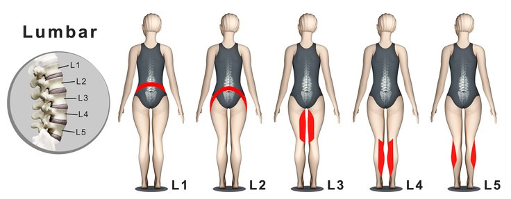
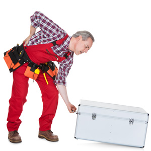
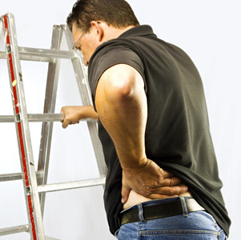

Disk Hernia
A herniated disc occurs when the nucleus pulposus, which is the gel-like inner substance of an intervertebral disc, breaks through the annulus fibrosus, which is the tough, outer rim of the tire-like structure. Pain is the most common symptom. However, nerve compression and inflammation can cause other symptoms including numbness, tingling and/or weakness in the extremities.
Disc herniation can cause other symptoms, including reflex dysfunction or an abnormal reflex response in the arms or legs, depending on where in the vertebral column the disc rupture occurs.
- Cervical Spine: If a disc ruptures in the upper spine area, neck pain main result which radiates into the shoulders or arms.
- Thoracic Spine: Mid-spine disc herniation is uncommon. If a disc does rupture in this area, pain may radiate into the front or back of the body’s trunk
- Lumbar Spine: Disc herniation in the lower spine typically causes pain that may radiate or shoot into the buttocks, thighs, and legs. This is sometimes called sciatica.
Prevalence
Pain in the lower back can develop for many different reasons. People use the terms "slipped disc" and "ruptured disc" very frequently and it's often assumed that every person who has pain in their back has a ruptured or herniated disc. The truth is, a true herniated nucleus pulposus, which is the medical term for a ruptured disc, is not a very common medical problem. In fact, most disorders that cause back pain are due to something other than a herniated disc.
In general practice clinics, the overall incidence of true herniated nucleus pulposus in patients who seek medical care due to new symptoms of lower back pain is less than 2%.
Reasons
Anatomy
To better understand what happens when a disc ruptures or herniates, it's helpful to know a little about the anatomy of the vertebrae themselves and the different parts of the body that make up the spinal column.
In between each of your vertebrae is a cushion that acts like a shock-absorber. These are called intervertebral discs. They are sometimes compared to jelly doughnuts. Each disc has a tough outer ring made up of fibers, that are really a strong ligament that bind the vertebra together. This outer rim is called the annulus, and it is the strongest part of the disc. The center of each disc, called the nucleus pulposus, is filled with a gel-like substance. This soft center is what gives the discs their ability to act as shock-absorbers.
When a disc herniates, the tough outer rim is damaged and the soft gel center moves out of its normal space. If the rim is damaged near the spinal canal, the gel material can bulge out and press into the spinal nerves or the spinal cord.
Causes of Herniated Discs
The primary reasons discs herniate is due to normal wear and tear on the spine and the process of aging. As we grow older, the discs between our vertebrae are negatively affected by changes that cause them to dry out and lose some of their elasticity. This is usually a slow process and the herniation develops gradually. Occasionally, events occur that cause a disc to suddenly rupture or herniate. Examples of these types of events are trauma, such as falls or other injuries such as car accidents. Lifting or twisting are other examples of events that can cause a disc to herniate suddenly.
Most cases of true herniated nucleus pulposus occur in middle-aged and young adults. Children can develop herniated discs, but this occurs rarely. In the elderly, degenerative changes in the spine that normally occur with age make it less likely for a true herniated disc to develop.
If too much pressure is placed suddenly on a disc, rupture can occur. One example of this can be falling from a tree and landing on the buttocks. This type of fall causes a significant amount of force to be placed on the spine all at once. If enough force is experienced, either a vertebra can break or fracture, or a disc can rupture. Bending from the waist also places extreme force on the intervertebral discs. If you try to lift a heavy object while bending, the combination of these forces can cause a ruptured disc.
A small amount of force can also cause a ruptured disc. When this occurs, it is usually due to weakening in the fibrous rim of the disc (the annulus) from repeated trauma that has added up over time. As the annulus becomes weaker, eventually too much force or pressure is applied and it herniates due to its weakened condition. You may be lifting or bending in a way that has never caused a problem before, but due to the aging process of the spine, a rupture occurs.
Herniated discs cause problems for two reasons. First, the gel-like substance that leaks into the spinal canal from the nucleus pulposus can exert pressure on the spinal nerves. There is also a possibility that this gel-like material causes a chemical irritation of the nerve roots. The pressure, combined with the irritation, can cause the nerve roots to not function correctly. The result is pain, and/or numbness and weakness in the portion of the body served by the affected nerve.
Symptoms
Some people with a true herniated disc do not experience any pain. The symptoms of the problem come from the pressure that is placed on the spinal nerves and from irritation. Many people who have disc herniation do have pain due to other problems with their back that were present when the disc ruptured. Typical symptoms of a herniated lumbar disc include:
- Pain that radiates into one leg or into both legs
- Tingling or numbness in areas of one leg or both legs
- Weakness in certain muscles of one leg or both legs
- Absence of reflexes in one leg or both legs
The location of these symptoms varies depending on which nerve or nerves have been compressed in the spinal column. The location of the symptoms will help your physician determine the correct diagnosis. By knowing where you are experiencing pain, your doctor will have a better idea of the location of the ruptured disc.
Diagnostic procedures
If your physician suspects a herniated disc, he will obtain your medical history and complete a thorough physical examination as well as neurological tests. He will observe your spine while you are standing and while walking and may ask you to complete other movements to assess your mobility and balance. He will examine your spine for any sign of abnormality and will check your reflexes, assess sensation and look for any sign of weakness. He will ask about your pain and other symptoms.
Your physician may recommend imaging tests to help confirm the diagnosis of a herniated disc. He may order tests such as X-rays, an MRI or a CT scan.
Treatment
Not every case of a disc herniation requires surgery. In fact, in most cases herniated discs do not require surgical treatment. How a herniated disc is treated depends on the symptoms and whether they are resolving or getting more serious. Your doctor is more likely to recommend surgery if your symptoms are steadily becoming more severe. If your condition is improving, he may recommend a course of treatment that involves watching and waiting to see if your symptoms resolve. Many patients who experience problems because of a herniated disc when it first occurs, find their symptoms completely go away over a period of several weeks or a few months.
Conservative Treatment
If there are no signs of serious complications resulting from a disc that has herniated, many times doctors will recommend conservative treatment of your symptoms. Conservative treatment includes:
Observation: This involves watching your condition to make sure the herniation does not lead to other serious complications. If there are no indications of progressive weakness or numbness, and your pain is manageable, your physician may suggest watching and waiting.
Rest: If the herniated disc causes more significant pain, your activity may need to be decreased, and you may need a few days away from your job. After resting for several days, slowly start to increase your activity with gentle tasks such as walking, and gradually increase your activity tolerance.
Pain medications: Depending on how severe your pain is, different analgesics (pain medications) can be used to help you be more comfortable. Nonsteroidal anti-inflammatory drugs (NSAIDs) like aspirin, ibuprofen and naproxen can be purchased over-the-counter and help to relieve pain and decrease the inflammation caused by the disc herniation. These drugs can cause stomach irritation, so should be taken with food. If these medications are not effective, your physician may prescribe stronger medication for your pain such as narcotics, muscle relaxants or other types of medications. Narcotic analgesics can become addictive, and many doctors will not prescribe these for more than a few weeks.
Epidural Steroid Injection (ESI): An injection of a steroid medication such as prednisone directly into the affected disc area to decrease the pain and inflammation is usually only suggested in cases of severe pain or if surgery is quickly becoming the only other available treatment option. ESI is only effective as a pain control intervention about 50% of the time.
Surgical Treatment
Laminotomy and Discectomy
The most traditional surgical procedure for treating a herniated disc is the laminotomy and discectomy.
In this operation, an incision is made in the back directly over the disc that has herniated. The muscle tissues under the skin are moved so the doctor can see the backbones. It may be necessary to take X-rays during the operation to make sure the correct vertebra and disc are chosen. A small incision is made in between the two vertebrae where the ruptured disc is located. This incision allows the surgeon to visualize the spinal canal. A small portion of the vertebra (the lamina) usually needs to be removed to make access to the spinal canal possible.
The surgeon then finds the gel-like disc material which has ruptured from the disc and removes it from the spinal canal. This will take the pressure and irritation off the spine. He also removes as much of the material he can that is still inside the disc to prevent it from leaking out (herniating) again.
When the doctor is finished with the procedure, the muscles are replaced into position, and the skin incision is closed with metal staples or sutures.
Micro-discectomy
This procedure is basically the same as the traditional laminotomy and discectomy; however, the incision is much smaller. This means there is less injury to the unaffected parts of your spine during the procedure and recovery may occur more rapidly.
A very small incision is made just over the herniated disc, and the muscles are moved aside as in the traditional procedure. Once the vertebra is seen, an operating microscope is inserted and used to complete the operation. The remainder of the procedure is completed using the same approach as the traditional method.
Endoscopic Discectomy
In this operation, even smaller incisions are needed to insert special television cameras into the spinal canal so the surgeon can visualize the disc material. Other special surgical instruments are also inserted through these small incisions, and the surgeon views the TV screen and guides the instruments to remove the disc material.
This procedure is not yet being widely used and is still evolving. It is beneficial in that the incisions required are very small (1/4 inch), so do even less damage to tissues around the spine than the micro-discectomy. This can mean fewer complications and faster recovery times.
Complications
Before surgery
Complications from a herniated disc can occur even before surgery. Cauda equina syndrome is probably the most serious complication that can occur as a result of a herniated disc. This syndrome results when a large portion of disc material ruptures into the spinal canal in the area where the nerves travel which control bowel and bladder function. Permanent damage to these nerves can result from pressure. If this happens, you may become incontinent (lose control) of bowel and bladder function. This is a rare, but serious condition. If your physician suspects this is happening, he will recommend immediate surgery to get the pressure off the nerves.
During surgery
During any type of surgical procedure there is always the risk of complication due to anesthesia. Possible complications during an operation for a herniated disc include:
Nerve injury: Removal of herniated disc material involves working near the spinal nerves. During the procedure, the nerves may be damaged or injured. If this happens, you may suffer nerve damage, causing permanent weakness, numbness or pain in the area the nerve travels.
Dural Tear: The spinal cord and the spinal nerves are covered with a water-tight bag of tissue which is called the dura mater. During surgery, a tear can occur in this covering and it is not unusual for this to occur in any type of operation on the spine. If the tear is noticed during the operation, it is repaired and usually heals without further complication. If it goes unnoticed during surgery, the tear may not heal and it can leak spinal fluid. Leakage of spinal fluid can result in problems such as spinal headaches and the risk of infection in the spinal fluid, called spinal meningitis. If the leak does not heal and seal itself on its own fairly soon after surgery, the tear in the dura may have to be surgically repaired. This would require a second operation.
After surgery
Some complications do not become apparent until after surgery. Some become evident soon after your operation and others may take months to show up. Post-surgical complications include:
Infection: All surgical procedures carry some risk for infection and surgery on the spine is no different. Infection can develop around the nerves in the spinal canal, inside the affected disc or in the incision made in the skin. If infection involves only the incision in your skin, the only treatment needed may be antibiotics. If the infection develops in the disc area or in the spinal canal, you may need further surgery to drain the infection in addition to antibiotics.
Re-herniation: There is about a 10-15% chance that the same disc that was operated on will herniate again. This usually occurs within the first six weeks following your surgery, but it may happen anytime. If this occurs, you may need another operation.
Persistent pain: Surgery does not always eliminate pain. There are many reasons people continue to have pain despite back surgery. These reasons include:
- If the nerves have been damaged by pressure caused from the herniated disc, complete recovery may not be possible.
- Scar tissue may form around the nerves following surgery. This puts pressure on the nerves and causes pain similar to the pain caused by the herniated disc.
- The pain you were having prior to surgery may be from issues in addition to disc herniation that were not solved by removing the herniated disc.
Degenerative disc Disease: Any time a disc is injured, the injury can lead to degeneration in that portion of the spine. A disc that has been surgically altered can certainly be considered as "injured." This places the surrounding area of the spine at increased risk for degenerative changes to occur. The degenerative process is very slow, usually taking several years to occur, but if the changes caused by degeneration become severe, a second surgery may be needed.
Rehabilitation

Following your operation, your physician will probably recommend physical therapy before you begin an exercise routine on your own. A skilled therapist will help you choose exercises that are safe and effective for you as an individual. Exercise is essential to your recovery as well as to maintaining your spine health over time. It's the easiest and most sensible way to combat problems with your back.
Research has shown that exercise, done on a regular basis is linked to fewer back problems. It has many benefits for your spine health including:
- Strengthening: It can help strengthen your core muscles that help support your spine, and also can strengthen the muscles of your arms and legs. Strength in your muscles reduces back strain.
- Exercise can reduce your risk of falling and sustaining injuries.
- Stretching exercises decrease the risk of painful spasms in the muscles.
- Weight-bearing exercise helps to prevent osteoporosis, which in turn decreases your risk of compression fractures.
- Aerobic exercise, the kind that increases your heart rate, can help to relieve pain. It stimulates the body to release its own "feel good" chemicals, called endorphins.